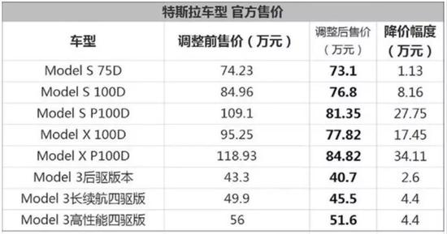

其他汽车对我来说只是代步工具。但特斯拉却是“智能汽车”。特斯拉 和 iPhone 有着明显的相似之处。都没有物理按钮。没有旋钮。（没有空调通风口。也没有打开手套箱的手柄。他们将所有一切都收在了汽车中间的触摸屏上）。我们回过头看看当年的iPhone好了。08年的时候，手机老大Nokia的市场占有率大概是40%，而IPhone才刚刚出现，却改变了人类对手机的概念。手机不仅是打电话发短信，而是一个智能掌上设备。到今天手机是智能机的一统天下，过去的“大哥大”只存在人们的记忆中。所以特斯拉代表了汽车未来发展的重要方向：自动驾驶和新能源，所以特斯拉在目前确实占尽优势。 另外作为电动车它动力强劲，一般超级跑车根本不是他的对手，不花油钱，电费比油费便宜太多了。
|
|
|
|---|---|
|
|
|
|
特斯拉公司老板马斯克用其旗下的火箭公司SpaceX，发射了迄今为止使用中的最强力火箭（是世界唯一的可回收火箭公司呦！），把一辆樱桃红色的特斯拉跑车送入地球至火星的椭圆形轨道。
没有手刹，走进不用钥匙就可开门，离开后可自动锁车。你什么也不用管，对于「忘事佬」真的是省事、省心； 全身多个摄像头、传感器，在停车、转弯的时候，可以很精确的感知到周围情况。正因为没有发动机，还空出了一个前备箱的位置，这里体现出了电动车的结构优势。人人都知道，特斯拉汽车的内饰中央，是一块又中看又中用的硕大屏幕。 操控自如、反应灵敏、画质清晰、流畅的就像一台ipad。下图的弧线既是对周围障碍物的感知。
手机App随时查看车辆位置、状态等，甚至控制它的；大热天的，提前十分钟用App打开空调也是蛮爽的。 特斯拉汽车开创了智能互联汽车的先河。（通用Onstar和丰田G-book相比之下，弱爆了，就不作数了）。 它的操作系统和软件，可以空中升级。带来更强大、更细致的功能； 特斯拉的升级频率很勤快，几乎每隔两周就有个小更新。 在过去一年的时间，光自动辅助驾驶技术，就至少推送了三个重要的更新版本——在传统汽车公司，实现这样的产品更新幅度，可能需要3年以上。 环绕车身共配有 8 个摄像头，视野范围达 360 度，对周围环境的监测距离最远可达 250 米。 12 个新版超声波传感器作为整套视觉系统的补充，可探测到柔软或坚硬的物体。就是有人划了你的车，你也不用担心。八个摄像头的监视视频无时不刻地将数据上传至云端服务器上，以供你日后调取取证。 即使是开了几年的老车主，对那个提示 OTA 更新的黄色小闹钟也还是充满期待，感觉自己马上又要开“新”车了。
去页面顶部这是我最喜欢的功能，特别在长途驾驶中不那么累：当我一个人在高速公路上时，一般就把自动驾驶打开， 看着它自己保持好速度、车距，自己转弯，总有种错觉： 仿佛不是我在开这台 Model 3 回家，而是它在送我回家。。更神奇的是我发现，自动驾驶功能在车道线残缺不全的小路上尽然也能使用。 另外，它还可以自动变道，自动停车等等。

没有发动机，所以也不用换机油什么的，保养费用几乎为0。家里还可以安装充电桩。 我在家里充电的费用大概是每百公里一加元左右，跟油费比起来，电费几乎可以忽略不计。
去页面顶部特斯拉汽车在全球采用直营店+自营电商模式，提供零售服务。 在各个市场，他们采用简单透明的定价方式。这就让你不用在购买汽车的时候货比三家，在不同的经销商网点勾心斗角、软磨硬泡， 被捆绑销售各种附加商品，接受莫名其妙的捆绑衍生服务。 最近又赶上了千载难逢的大降价，详情见下面的“特斯拉在售车型降价表”。
问题一：这个车，充满电能跑多远？
这几乎是所有人都会问的一个问题。其实很难给一个确定数字。因为电动车的续航，跟车速、载重、驾驶习惯都有关系。
 充满后的Model 3 显示 499km（EPA标准）就拿我这台 Model 3 性能版来说，满电表显续航 499 km，而实际跑下来也差不多。关于续航，我的观点是，像跑长途这种情况，才需要关注续航，提前规划好就没问题。
日常使用，其实不用在意续航的问题：一来，开得爽最重要；二来，因为充电其实很方便。
充满后的Model 3 显示 499km（EPA标准）就拿我这台 Model 3 性能版来说，满电表显续航 499 km，而实际跑下来也差不多。关于续航，我的观点是，像跑长途这种情况，才需要关注续航，提前规划好就没问题。
日常使用，其实不用在意续航的问题：一来，开得爽最重要；二来，因为充电其实很方便。
问题二：充电方便吗？充满要多久？
特斯拉充电的方式有很多种，简单来说分为家用充电桩、超级充电桩和目的地充电桩。实在找不到以上充电桩，你还可以用常见的 220V 插座给车充电， 用特斯拉的「随车充」就可以。 有特斯拉车友，靠着“野路子”，一路开去了拉萨。。。这个不展开说了，有空再专门写文章详细说。
问题三：多少钱？
最关键的问题来了，毕竟，买或不买，还是要看钱包啊！买不买得起，其实涉及到三个方面：车价、贷款方案、后续成本。
车价目前，在国内出售的 Model 3 有三个版本可选，价格分别是：
 各车型价格以上价格是 Model 3 的售价，上牌落地价还要加 8.62% 的购置税和约 1 万左右的商业保险。大家都知道国外汽车便宜，但特斯拉国内价格差异并不大。算下来，目前续航最高、最便宜的后驱版 Model 3 ，落地大概要 47 万，最贵的性能版大概要 62 万。还是觉得有点贵？来看看 Model 3 的贷款方案。贷款方案Model 3 的贷款方案有几种：一种是首付 15% ，剩下的最长可分五年还清；另一种是 3-4-3（或 5-3-2 ）这样的弹性方案，即首付30%、分期40%、尾款30%，这样每个月的还款压力会更小一些。
各车型价格以上价格是 Model 3 的售价，上牌落地价还要加 8.62% 的购置税和约 1 万左右的商业保险。大家都知道国外汽车便宜，但特斯拉国内价格差异并不大。算下来，目前续航最高、最便宜的后驱版 Model 3 ，落地大概要 47 万，最贵的性能版大概要 62 万。还是觉得有点贵？来看看 Model 3 的贷款方案。贷款方案Model 3 的贷款方案有几种：一种是首付 15% ，剩下的最长可分五年还清；另一种是 3-4-3（或 5-3-2 ）这样的弹性方案，即首付30%、分期40%、尾款30%，这样每个月的还款压力会更小一些。 特斯拉官网的「贷款计算器」以最便宜的后驱版 Model 3 为例，首付 13 万，每个月还 6300 元，三年后再付 13 万。后续成本常听司机朋友们说，现在买车，买得起，养不起。加油、修车、保养，哪一样不费钱？在后续成本这一块，电动车就省多了。前面算过了，充电的价格在每公里 0.1～0.35 元之间，比加油便宜不少。Model 3 的全车质保期为四年或八万公里，非人为损坏基本都是保修；如果是人为损坏，则走保险。修车成本没太大压力。至于保养，现在已经调整为每两年或 40000 公里做一次；保养的主要内容是一些损耗品的更换（雨刷、滤网、干燥剂、制动液），一次保养的价格在一两千左右。
特斯拉官网的「贷款计算器」以最便宜的后驱版 Model 3 为例，首付 13 万，每个月还 6300 元，三年后再付 13 万。后续成本常听司机朋友们说，现在买车，买得起，养不起。加油、修车、保养，哪一样不费钱？在后续成本这一块，电动车就省多了。前面算过了，充电的价格在每公里 0.1～0.35 元之间，比加油便宜不少。Model 3 的全车质保期为四年或八万公里，非人为损坏基本都是保修；如果是人为损坏，则走保险。修车成本没太大压力。至于保养，现在已经调整为每两年或 40000 公里做一次；保养的主要内容是一些损耗品的更换（雨刷、滤网、干燥剂、制动液），一次保养的价格在一两千左右。 Model 3 的保养并非与保修强制绑定，所以我建议可以分项目按需来做，更划算点。
Model 3 的保养并非与保修强制绑定，所以我建议可以分项目按需来做，更划算点。
写在最后
Model 3 让我想起当年的 iPhone 4 ——自它之后，智能手机（智能汽车）真正走入大众视野；我们的生活将被它彻底改变。不止特斯拉， 这条路上正在加入越来越多的同行者：国内新势力如蔚来、小鹏、理想智造，老牌厂商如奔驰、宝马、保时捷等等，也都在探索与进步中。 在我们面前展开的，是一幅更便捷、更环保、更高效的道路图景：清洁能源、智能互联、自动驾驶、共享出行。所以，你准备好上车了吗？
去页面顶部